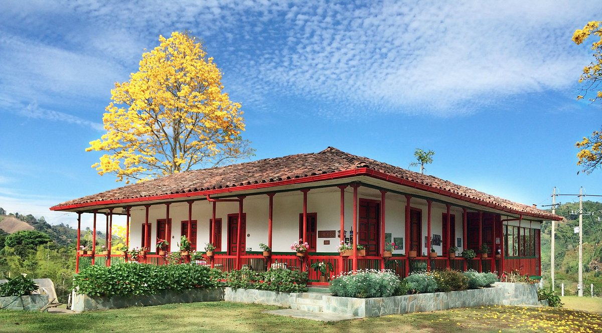
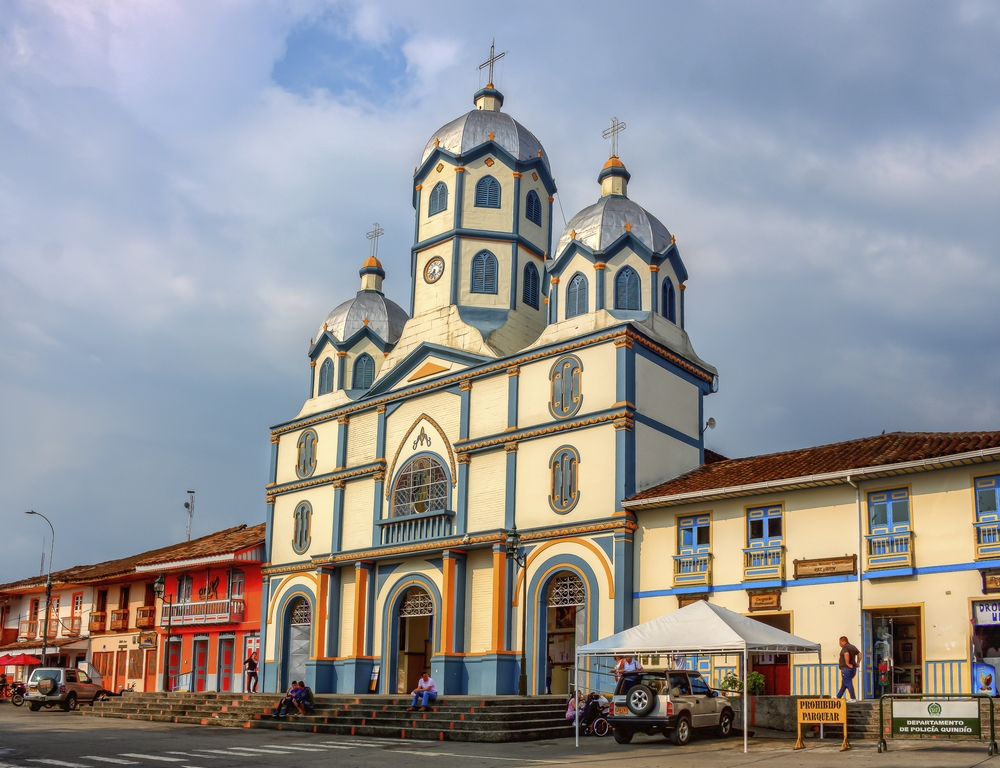
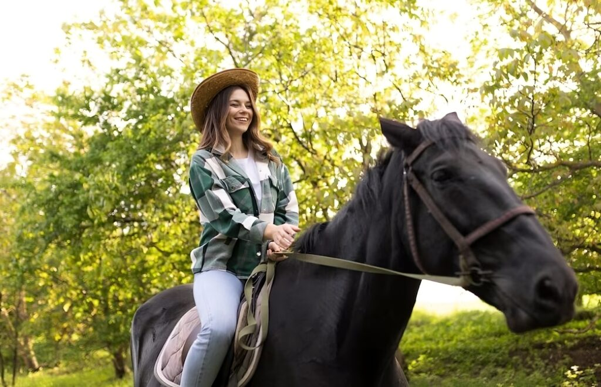
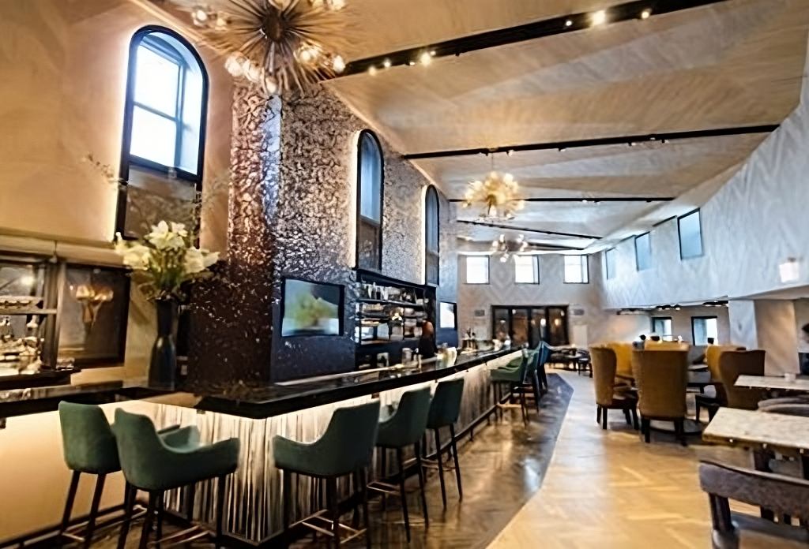
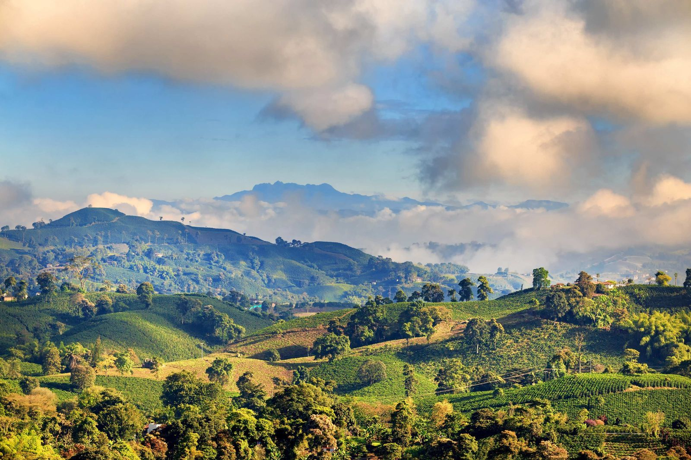
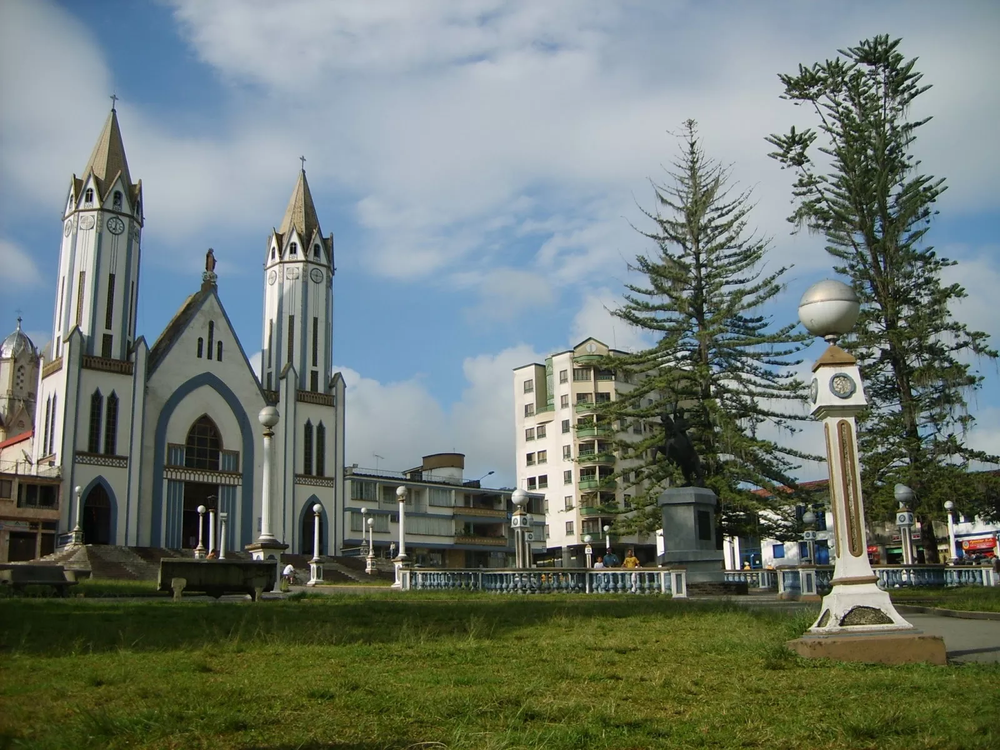
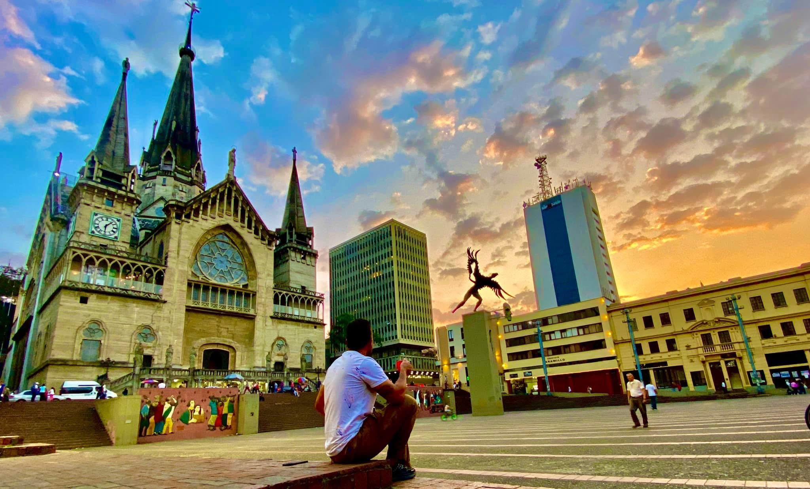
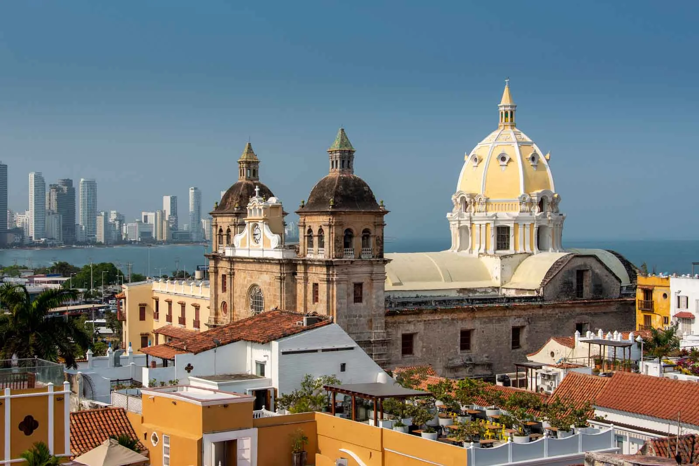
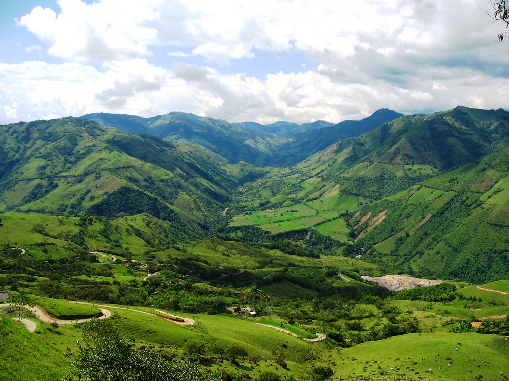
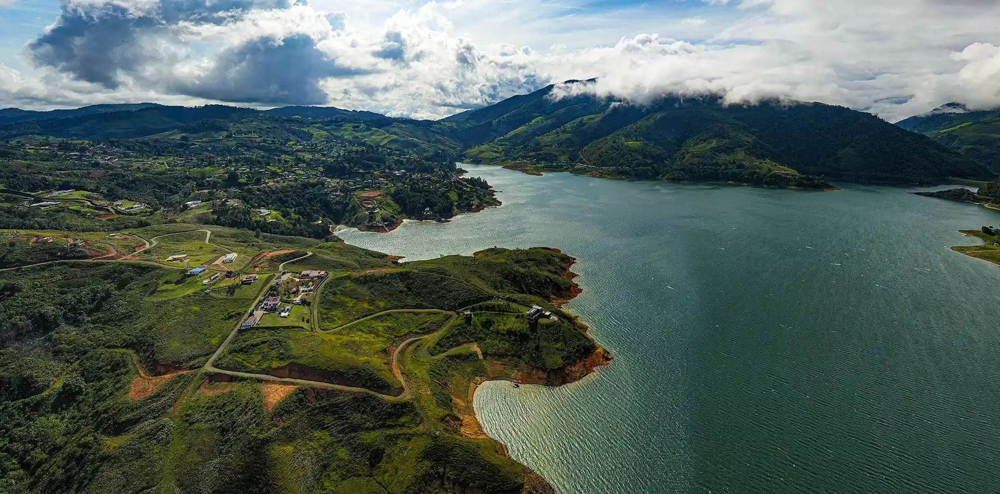

Finca de Ocaso - Salento
En este Tour nuestros expertos te guiarán a través del ciclo artesanal del café especial. Inicia tu viaje descubriendo el importante papel que el café ha jugado en el desarrollo cultural de la región. Continúa conociendo paso a paso el crecimiento de los granos de café desde que se planta la semilla hasta que se seleccionan y recolectan los granos maduros. Sigue a un sendero en donde brota desde un nacimiento el líquido más preciado, el agua.
Conoce el delicado proceso del beneficio del Café Sostenible Ocaso y cómo es comercializado por su calidad. Sumérgete en la estación final, dejando que tu sentidos descubran la especialidad de nuestro café. Al final revelaremos los secretos para preparar una perfecta taza de Café Sostenible Ocaso y podrás degustar según el método de preparación.

Finca Privada Cocora - Filandia
Salida desde el hotel o sitio según convenio. Degustación Café Quindío vía autopista del café. (Café incluido) Caminata por finca privada Aguas Claras con guía de montaña (duración 4 horas). Allí podrán observar lindos paisajes naturales, atravesar 4 quebradas de la finca, bosques en reserva protegida, yacimientos de agua natural, exuberante vegetación nativa de la región y palmas de cera de más de 60 metros. Realizará un recorrido con historia única de la finca contada por su propietario. Linda panorámica de montañas y guaduales.
Picnic típico colombiano al lado de la quebrada. Entrada plato fuerte, bebida no alcohólica. DURACIÓN DE ACTIVIDAD: 4 -5 horas y 90 minutos de transporte ida y regreso aproximadamente, según departamento de origen. Hora recomendada para empezar el tour 8:30 am. INCLUYE: Transporte en vehículo privado, bebida de bienvenida típica, entrada a la reserva natural, tour guiado, Snack, hidratación, seguro de asistencia médica.

CABALGATA OPCIONAL
Disfruta de un recorrido a caballo por paisajes naturales únicos del eje cafetero, rodeado de montañas, ríos y vegetación exuberante.
Esta experiencia es ideal para quienes buscan aventura, tranquilidad y conexión con la naturaleza en un entorno seguro y guiado por expertos.

Salento Quindío
Nos recibe el guía local y nos lleva por la maravillosa historia de El bejuco, elemento esencial para la elaboración de canastos y otros elementos que hoy son más de adorno que de utilidad, se consigue en el bosque de niebla andino, y las especies más usadas son el tripaperro y el chusco. La preparación del bejuco comienza con la recolección en el bosque. Luego viene el ripiado (descascarado y eliminación de nudos), el fraccionamiento de la fibra en tiras y el secado al sol.
Luego partimos hacia la calle central vía colina iluminada donde están los talleres de artesanías, allí nos encontramos con artesanos de la región quien con gusto nos enseñaran como hacer nuestro propio cesto (taller incluido duración 60 a 90 minutos).

TOUR POR EL PUEBLO
Visita guiada al mirador colina iluminada (entrada incluida). Podremos apreciar los diferentes municipios desde cada piso y un exuberante paisaje típico de la región. Cementerio y calle de la fundación.
DURACIÓN DE ACTIVIDAD: 4 horas y 90 minutos de transporte ida y regreso aproximadamente, según departamento de origen. Hora recomendada para el tour salida 9:00 am.
INCLUYE: Transporte en vehículo privado, bebida de bienvenida, tour por el pueblo, entrada a finca típica del bejuco, taller de cestería, ingreso a mirador colina iluminada, tour guiado, snack y seguro de asistencia médica.

TERMALES SALENTO
Experiencia termal en el corazón del eje cafetero, toma de fotografías panorámica de lindas montañas y exuberante naturaleza. Se ubica en el kilómetro 17 vía a la Laguna del Otún, en las estribaciones del Parque Nacional Natural los Nevados, en la vereda Potreros de Santa Rosa de Cabal – Risaralda, con una temperatura promedio de 14°centígrados y un clima húmedo lluvioso. Puede apreciar fuentes de agua, y variedad de flora y fauna. Disfrutará de un hermoso río termal y piscinas con diferentes temperaturas. Además, deje que su piel se oxigene en 3 baños turcos naturales vapor de agua termal y piscina de burbujas. Seguro de asistencia médica.

EJE CAFETERO
Ciudad capital del departamento de Risaralda conocida como “Ciudad sin Puertas”, “Perla del Otún” y “La Querendona, Trasnochadora y Morena”. Se encuentra a orillas del río Otún y se distingue por ser una ciudad comercial y cosmopolita, con gastronomía, centros comerciales, bares y discos.
TOUR POR EL PUEBLO
Nuestro personal certificado lo guiará por los sitios más emblemáticos de la ciudad. Transporte privado recorriendo centro histórico, parque banderas, parque el lago, tiendas de artesanías y plaza de Bolívar.
Incluye recorrido por los puentes representativos de Pereira, viaducto y puente helicoidal, fotografías panorámicas en CAU y recorrido por los lugares de fiesta y rumba, regreso al hotel o lugar según indicado.
En ese lugar nos recogerá nuestro transporte y nos llevará a disfrutar de los puentes más representativos de la perla del Otún (Pereira) viaducto y puente helicoidal, también realizaremos toma de fotografías panorámica en el CAU en el alto de Boquerón. Tiempo aproximado 20 minutos, traslado y recorrido por los lugares de fiesta y rumba, avenida circunvalar, barrio Álamos y centros comerciales (shopping aproximado 2 horas), regreso al hotel o lugar según indicado.

SANTA ROSA DE CABAL
Finca del Café es un lugar mágico donde el verde de la naturaleza se mezcla con el más exquisito aroma de café, para brindarles a nuestros visitantes una amplia gama de servicios y atracciones únicos en la región. Un café sabe mucho mejor cuando se vive la experiencia de la finca. Te guiaremos a través de nuestras hermosas plantaciones de Café Especial, enseñándote cómo es el proceso desde la siembra, la recolección manual selectiva y el despulpado. Después de esto, tostaremos granos de café Especial en un fogón de leña en la cocina típica de nuestra casa campesina, finalmente, prepararemos una deliciosa taza del café Especial más suave del mundo recién tostado y cultivado en la Finca Experiencia Tour del café, toma de fotografías de lindas montañas y exuberante naturaleza, snacks, hidratación, transporte con conductor guía. En el corazón de la tierra del café, ubicado a solo 35 minutos de Pereira. Realizando parada en tambo café buen día (panorámica de Pereira y Dosquebradas, café incluido)

MANIZALES
El origen del nombre Manizales es diferente a la mayoría de las demás ciudades de Colombia. La mayor parte derivan de circunstancias históricas, santos, personas ilustres o nombres indígenas. Para el caso de Manizales, por el sector de Maltería pasa un riachuelo abundante en un tipo de rocas llamadas “piedras de maní”, que son rocas graníticas de color gris, compuestas por mica, feldespato y cuarzo.8 Un conjunto de estas piedras de “maní”, sería llamado “manizal”.9 Por lo tanto, Manizales significa: conjunto de conjuntos de piedras de maní. Así como se dice que en el Valle del Cauca hay cañaduz ales, en la ciudad de 1849, se hablaba de “Manizales”. Con esta palabra se bautizó dicho riachuelo que hoy se conoce como quebrada Manizales y la cual daría nombre a la ciudad. También es denominada “La Perla del Ruiz” y “La Capital Mundial del Café ”.

PEREIRA
Finca del Café es un lugar mágico donde el verde de la naturaleza se mezcla con el más exquisito aroma de café, para brindarles a nuestros visitantes una amplia gama de servicios y atracciones únicos en la región. Un café sabe mucho mejor cuando se vive la experiencia de la finca. Te guiaremos a través de nuestras hermosas plantaciones de Café Especial, enseñándote cómo es el proceso desde la siembra, la recolección manual selectiva y el despulpado. Después de esto, tostaremos granos de café Especial en un fogón de leña en la cocina típica de nuestra casa campesina, finalmente, prepararemos una deliciosa taza del café Especial más suave del mundo recién tostado y cultivado en la Finca Experiencia Tour del café, toma de fotografías de lindas montañas y exuberante naturaleza, snacks, hidratación, transporte con conductor guía. En el corazón de la tierra del café, ubicado a solo 35 minutos de Pereira. Realizando parada en tambo café buen día (panorámica de Pereira y Dosquebradas, café incluido)

CARTAGENA -BOLIVIAR
Cartagena de Indias, conocida como la “Ciudad Amurallada”, es uno de los destinos más emblemáticos del Caribe colombiano. Su centro histórico, declarado Patrimonio de la Humanidad por la UNESCO, está lleno de calles empedradas, balcones coloniales, plazas y fortalezas históricas que cuentan la historia de la ciudad desde el siglo XVI. Los visitantes pueden disfrutar de playas de arena blanca y aguas cristalinas, como Bocagrande y Playa Blanca, así como de paseos en barco hacia las Islas del Rosario. La gastronomía local ofrece deliciosos platos de mariscos y comida típica costeña. Cartagena combina historia, cultura y diversión, haciendo de cada visita una experiencia inolvidable.

ANTIOQUIA
Antioquia, corazón del noroeste colombiano, es famosa por su capital Medellín, conocida como la “Ciudad de la Eterna Primavera” por su clima agradable todo el año. La región combina modernidad y tradición, con impresionantes paisajes de montañas, valles y ríos. Antioquia ofrece cultura, arquitectura colonial, museos, parques naturales y pueblos llenos de encanto como Guatapé y Santa Fe de Antioquia. Los visitantes pueden disfrutar de actividades al aire libre, como senderismo, ciclismo y recorridos por plantaciones de café. La gastronomía local incluye platos típicos como la bandeja paisa, arepas y dulces tradicionales. Antioquia es un destino que mezcla historia, naturaleza y diversión para todos los gustos.

VALLE DEL CAUCA
Valle del Cauca, ubicado en el suroeste de Colombia, es famoso por su diversidad geográfica que incluye montañas, valles, ríos y playas en el Pacífico. La región combina tradición, cultura y modernidad, con ciudades como Cali, conocida como la capital de la salsa, y destinos naturales como el Parque Nacional Natural Farallones de Cali. Los visitantes pueden disfrutar de actividades culturales, gastronómicas y deportivas, incluyendo recorridos por plantaciones de caña de azúcar, senderismo, avistamiento de aves y deportes acuáticos en ríos y costas. El Valle del Cauca destaca por su música, festivales, gastronomía típica y la calidez de su gente.